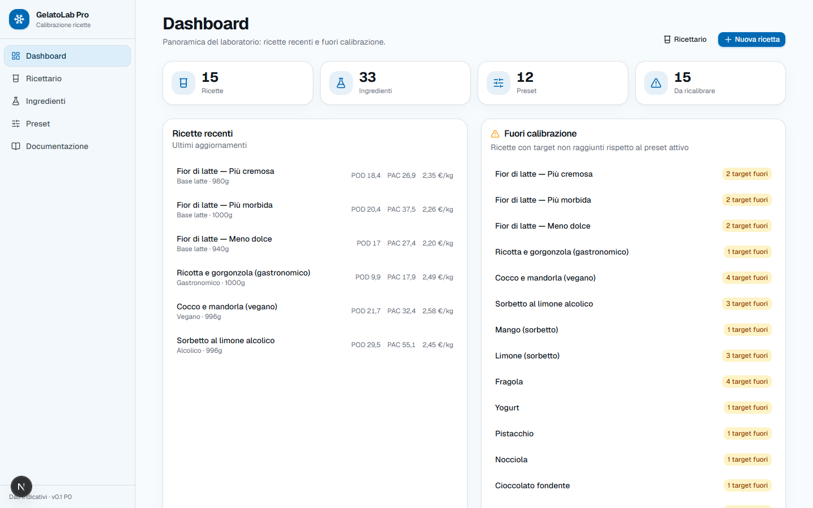
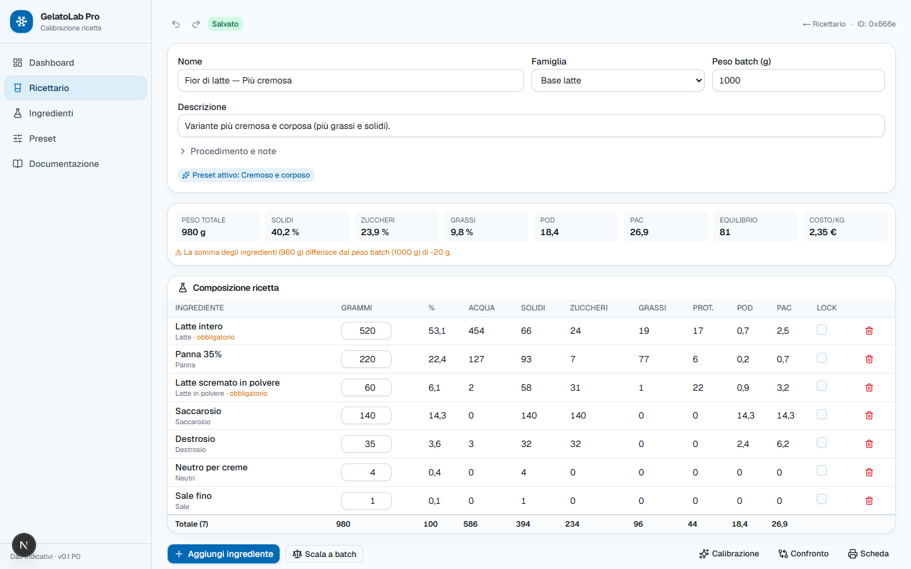
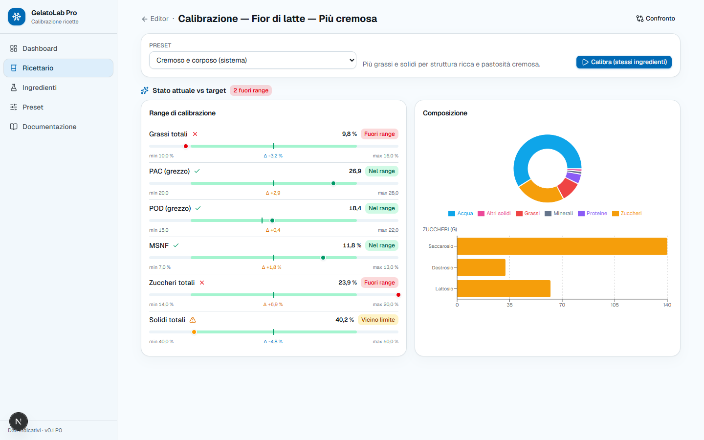
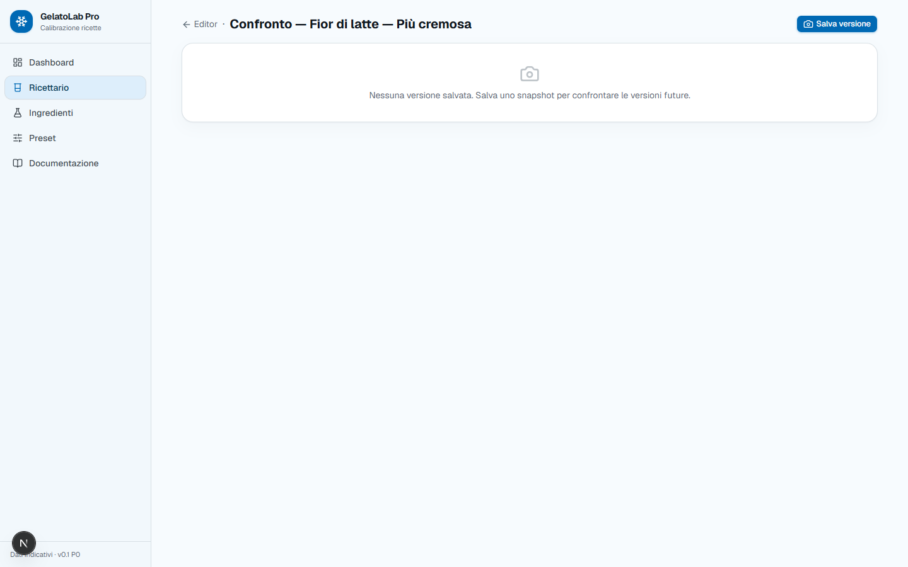
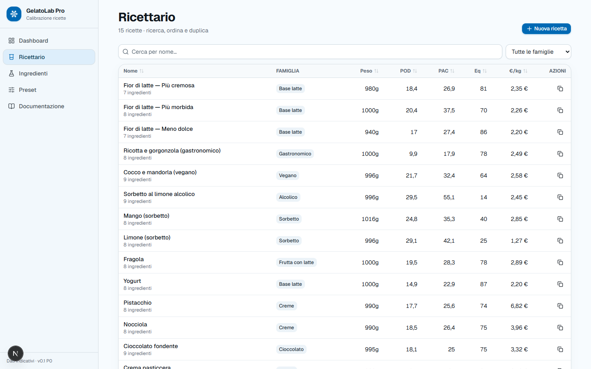
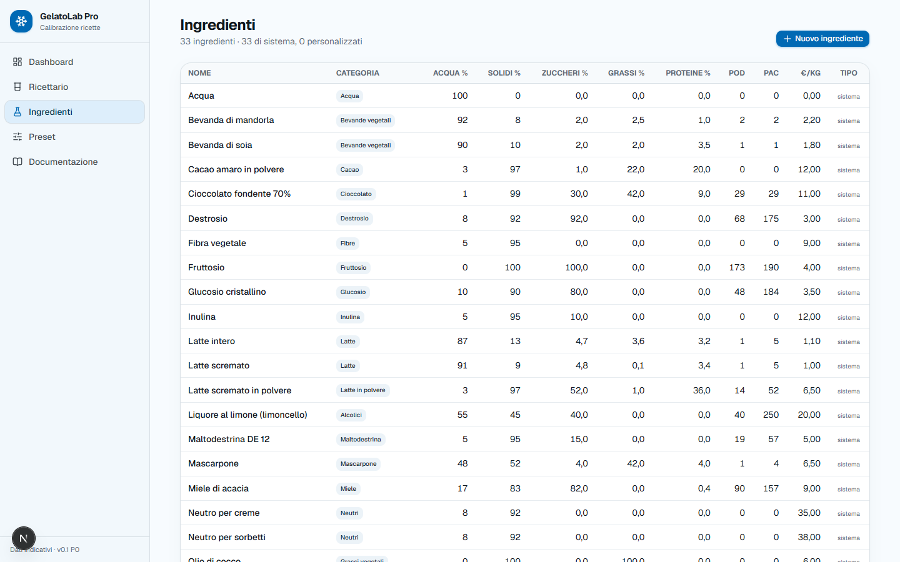
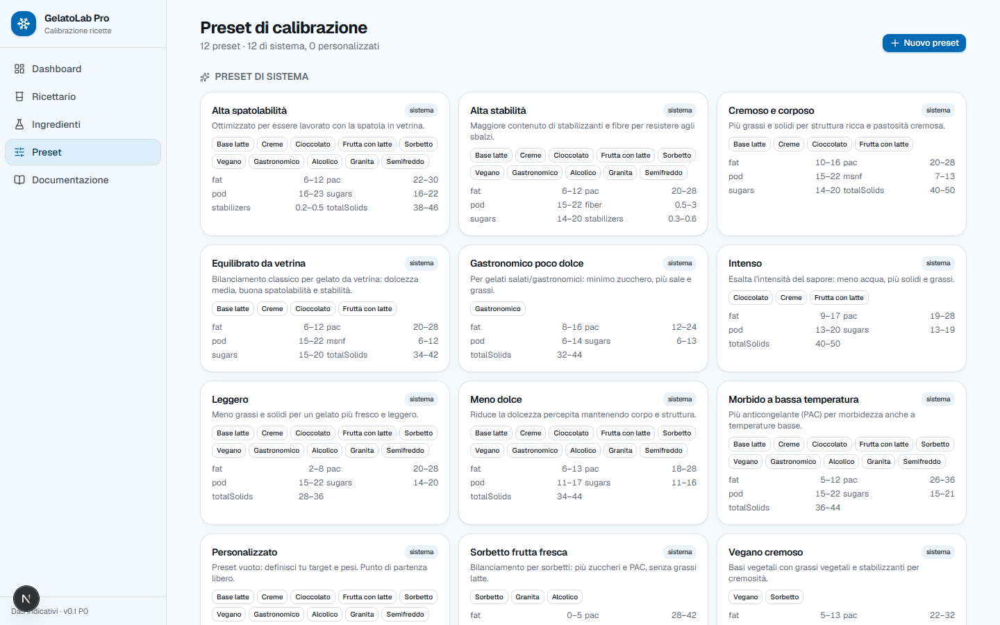

Più zucchero abbassa il punto di congelamento ma alza il POD. Più grassi danno struttura ma tolgono spazio ai solidi magri. GelatoLab Pro non nasconde quel conflitto dietro un risultato: te lo mostra numero per numero, ingrediente per ingrediente.

Quattro cose, tenute insieme da un principio: nessun numero senza la sua provenienza.
POD, PAC, solidi, acqua, zuccheri per tipo, grassi, proteine, MSNF, fibre, minerali, kcal e costo. Ricalcolati a ogni modifica, con la riga di ogni ingrediente che mostra quanto porta a ciascun totale.
Se la somma degli ingredienti non corrisponde al peso batch, l'app lo dice invece di normalizzare in silenzio.
Undo / redoAutosaveScala a batch
Dodici preset di sistema definiscono i range per famiglia. Ogni parametro mostra il valore attuale, il range valido, l'ideale e di quanto sei fuori — non un semaforo verde o rosso.
Il solver lineare HiGHS propone tre soluzioni per rientrare nei target senza cambiare gli ingredienti. Se i vincoli sono incompatibili fallisce dicendo quali, invece di restituire un compromesso inventato.
HiGHS WASMDeterministicoNessun LLM
Ogni versione salvata è uno snapshot che non cambia più. Il confronto mostra il diff fra lo snapshot e la ricetta attuale, e segnala il drift di composizione quando i dati di un ingrediente sono cambiati sotto i piedi.
SnapshotDrift detectionExport JSON / CSV
Ricettario, database ingredienti e preset di calibrazione.



Schermate reali, catturate dall'applicazione in esecuzione con il seed di sviluppo.
Il vincolo portante è che il dominio resta puro: src/domain/ non
importa Prisma, né Next, né React. È dove vivono i calcoli, ed è per questo che
è la parte più densa di test — si verifica chiamando funzioni, senza database
né rendering.
Calcoli, solver e valutazione dei target vivono isolati da framework e database. Testabili chiamando funzioni.
Le euristiche sono dichiarate tali. I target impossibili falliscono con un messaggio, non con una stima plausibile.
Lint, typecheck, test con coverage e build di produzione, su ogni push e ogni pull request.
| Frontend | Next.js 16 App Router · React 19 · TypeScript strict |
|---|---|
| Stile | Tailwind CSS 4 · Base UI |
| Stato | Zustand + zundo (undo/redo) |
| Form | React Hook Form · Zod, schemi condivisi client e server |
| Tabelle e grafici | TanStack Table v9 · Recharts |
| Backend | Server Action · Prisma 7 · PostgreSQL 16 |
| Solver | HiGHS via WebAssembly, programmazione lineare |
| Test | Vitest · Playwright |
Serve Node 24 e Docker per PostgreSQL. Il seed carica 33 ingredienti, 12 preset e 15 ricette dimostrative.
# 1. PostgreSQL docker compose up -d # 2. Ambiente cp .env.example .env # 3. Dipendenze e client Prisma npm install npx prisma generate # 4. Migrazioni e seed npm run db:setup # 5. Via npm run dev
Su Windows, se prisma migrate risponde P1001, usa
127.0.0.1 invece di localhost nel
DATABASE_URL: localhost risolve a IPv6 e il mapping
della porta del container non risponde su quell'indirizzo.